IISのセットアップ¶
IISをインストールします。SitecoreはIIS上のWebサイトとして動作します。また、Experience Platform 環境で必要な、xConnect も IIS 上の独立したSitecore本体とは別のサイトとして動作します。
IISのインストール¶
サーバーマネージャーを起動して、役割と機能の追加 を選択します。
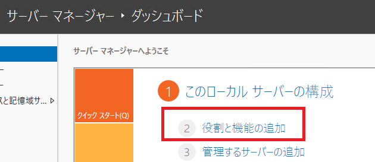
ウィサードが起動するので、 次へ をクリック。
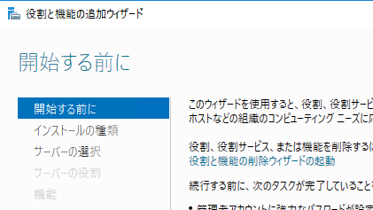
インストールの種類の選択 画面が表示されます。 役割ベースまたは機能ベースのインストール を選択して、 次へ をクリック。
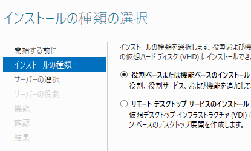
対象サーバーの選択画面では、ローカルサーバーが選択されていることを確認して、 次へ をクリック。
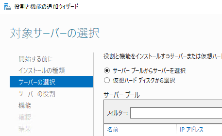
サーバーの役割の選択画面で、 Web サーバー(IIS) を選択します。
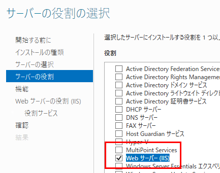
この時、次のダイアログが表示されたら、機能の追加 をクリックします。元の画面に戻ってきたら 次へ をクリック。
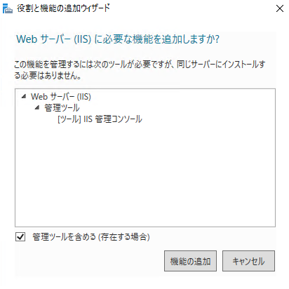
機能の選択画面で、デフォルトのまま、 次へ をクリック。
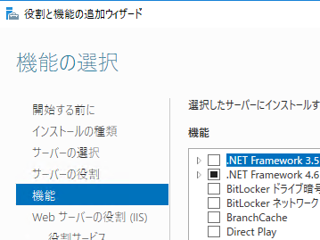
Web サーバーの役割(IIS) 画面で、 次へ をクリック。
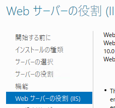
役割サービスの選択画面で、 アプリケーション開発 > ASP.NET 4.6 をクリック。
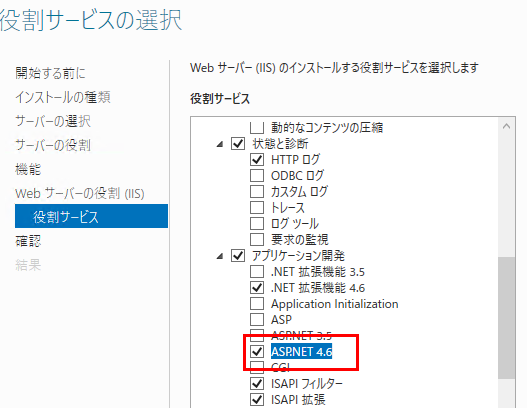
この時、関連する必要な機能の追加確認ダイアログが表示されたら、 機能の追加**をクリックします。元の画面に戻ってきたら **次へ をクリック。
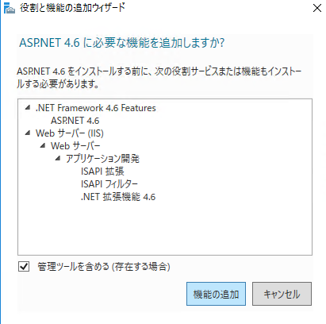
確認画面で、選択したオプションの内容を確認したら、次へ をクリック。
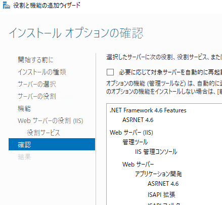
しばらくするとインストールが完了します。
完了したら、再起動します。